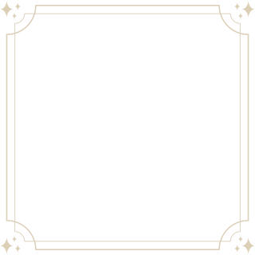
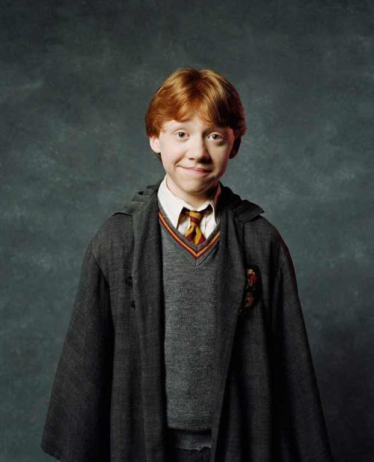
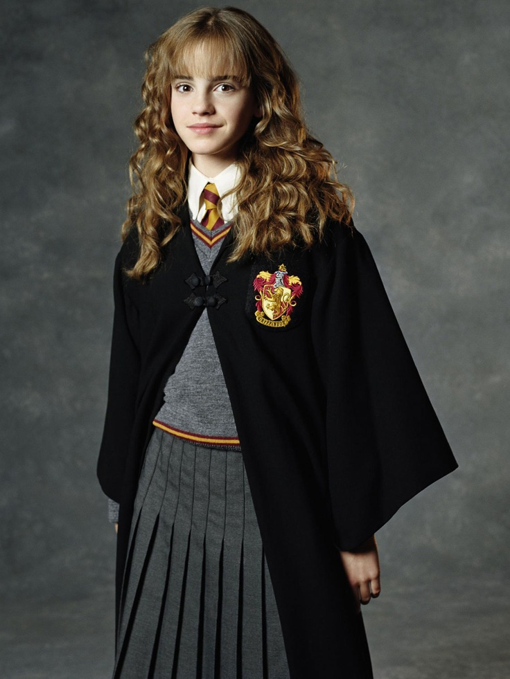
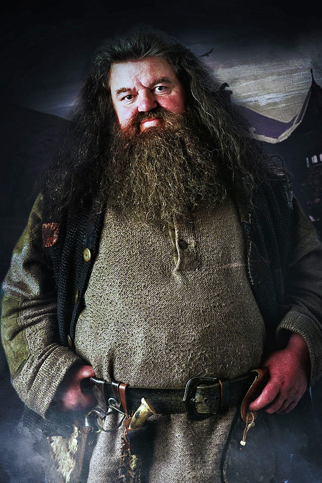
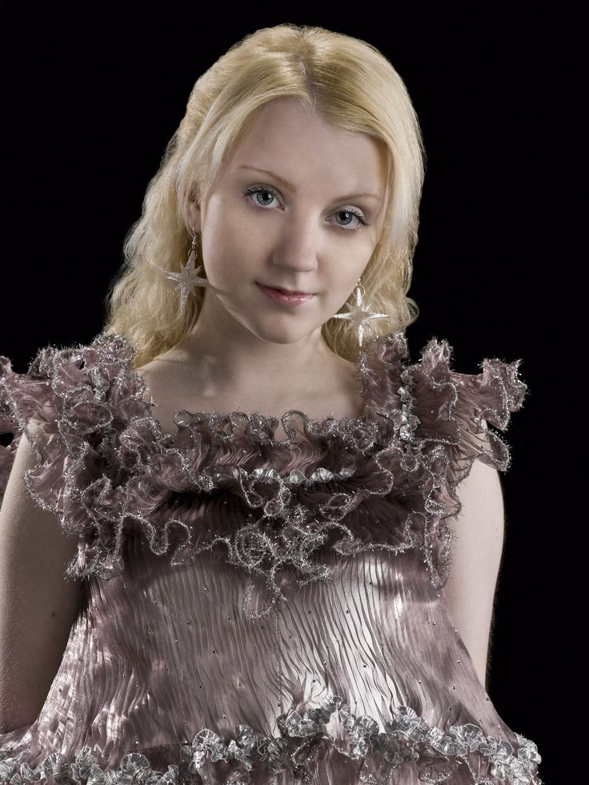
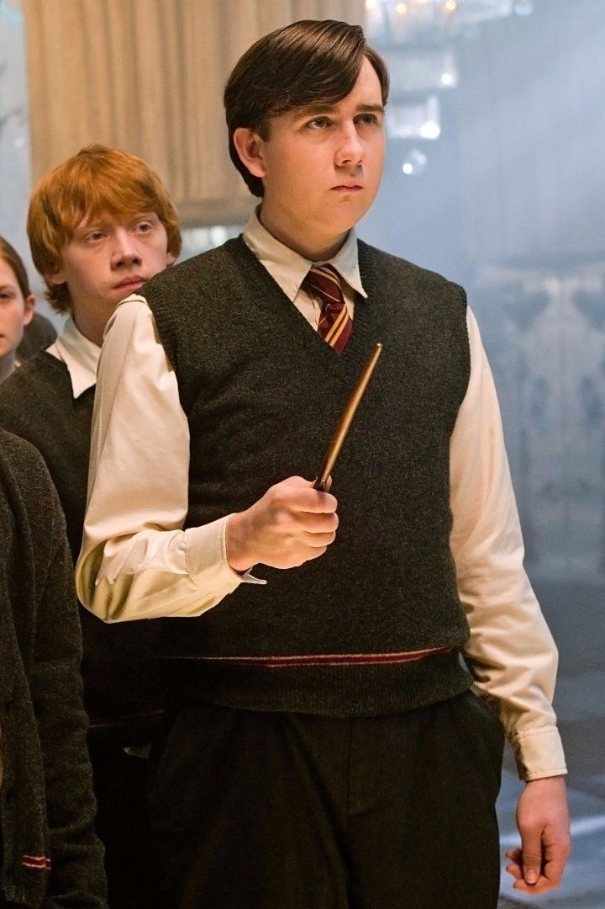

Friends

"You need courage to stand against your enemies, but even greater courage to go against your friends."
©Albus Dumbledore

Ron Weasley. He is Harry Potter's loyal and steadfast friend. From their first meeting on the Hogwarts Express, Ron's down-to-earth nature and sense of humor instantly endeared him to Harry. Despite coming from a large, poor family, Ron never let that define him, always valuing friendship and bravery above material possessions. Ron's unwavering support and unwavering loyalty were crucial in Harry's journey, whether it was facing dangerous challenges or standing up against injustice.
Hermione Granger is Harry Potter's brilliant and resourceful friend. From the moment they met on the Hogwarts Express, Hermione's intelligence and thirst for knowledge impressed Harry. Her insatiable curiosity and dedication to her studies often made her the voice of reason and the problem solver in their trio. Despite facing challenges and discrimination as a Muggle-born witch, Hermione never wavered in her convictions and fought for equality and justice within the wizarding world.


Hagrid, the lovable half-giant, is a dear friend and confidant to Harry Potter. From the moment Hagrid rescued Harry from the ruins of Godric's Hollow and introduced him to the magical world, a strong bond formed between them. With his massive stature, wild beard, and gentle nature, Hagrid became a source of comfort and guidance for Harry, always offering a listening ear and sage advice. Despite his unconventional appearance and humble background, Hagrid possessed a deep love and understanding of magical creatures, often serving as their protector and advocate.
Luna Lovegood, often referred to as "Loony" by some of her peers, is an eccentric and enchanting friend of Harry Potter. Luna's unique perspective and unwavering belief in the extraordinary brought a touch of magic to Harry's life. With her dreamy silver-blond hair and distinctive radish earrings, Luna stood out from the crowd, embracing her individuality without hesitation. Despite facing ridicule and mockery from others, Luna remained true to herself, unapologetically embracing her quirks and embracing her own brand of wisdom.


Neville Longbottom, a timid and unassuming classmate of Harry Potter, blossomed into a courageous and steadfast friend. From their early days at Hogwarts, Neville's shy nature masked his hidden potential and resilience. Despite facing numerous challenges and doubts about his own abilities, Neville's unwavering determination and unwavering loyalty to his friends never wavered. Over time, he proved himself to be a true Gryffindor, stepping up to face adversity and fight for what he believed in. Neville's growth and transformation mirrored Harry's own journey, as he found his voice and embraced his strengths.